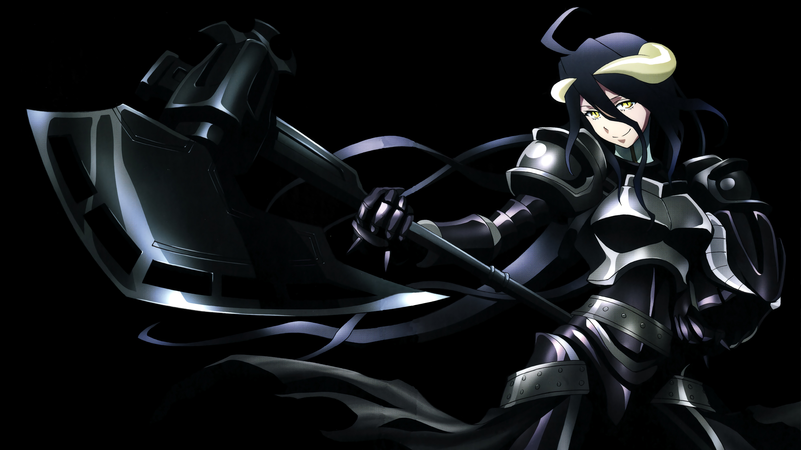
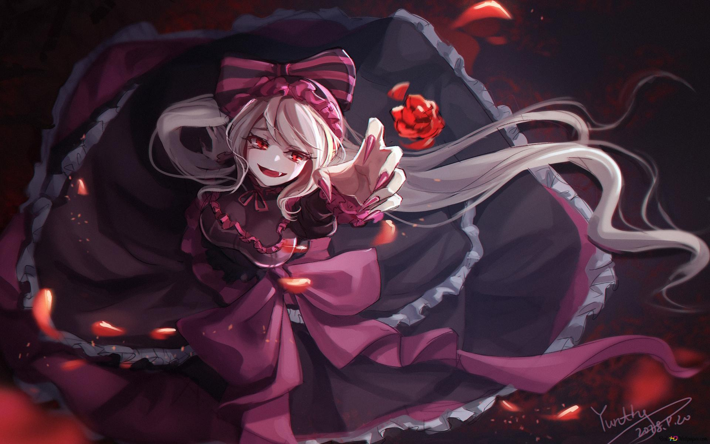
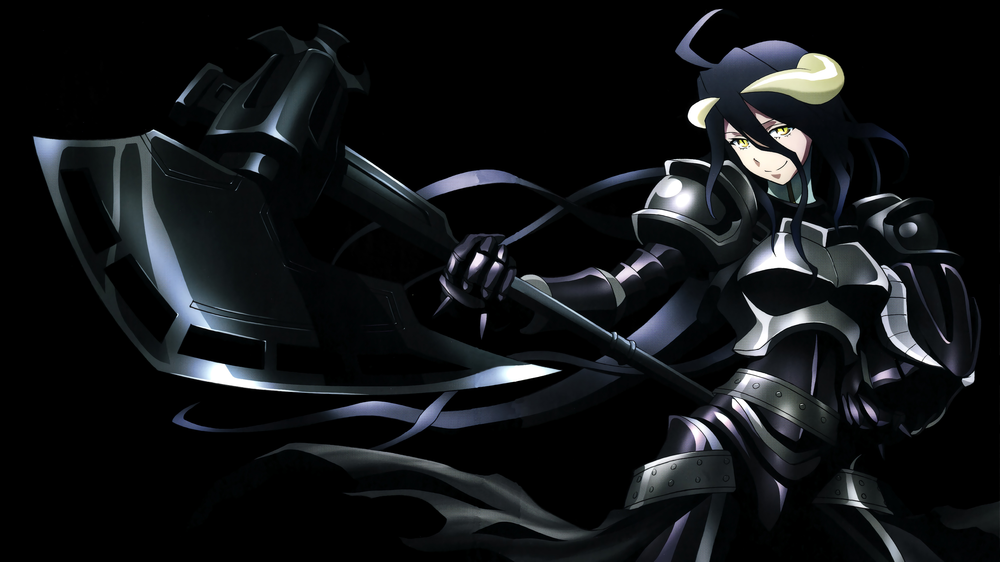
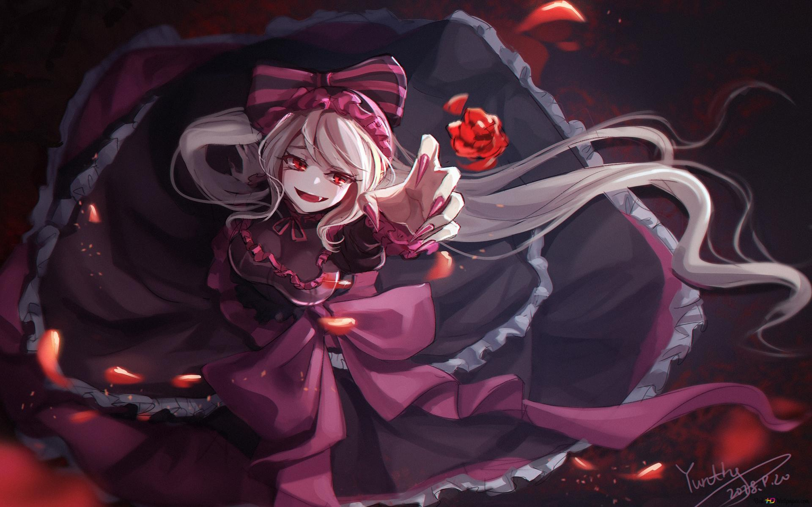

Ainz Ooal Gown
Souverain de la Grande Tombe de Nazarick, Ainz est l’avatar de Momonga dans le nouveau monde. Charismatique, stratège et surpuissant, il dirige ses fidèles gardiens tout en cherchant à comprendre ce monde inconnu.
Kugane Maruyama
Auteur japonais de la saga Overlord, débutée en 2010. Sa série de light novels a inspiré un manga et un anime à succès, devenant l’une des œuvres isekai les plus populaires au monde.
Momon des ténèbres
Alias aventurier d’Ainz dans le royaume humain, Momon est célèbre pour ses exploits et son armure noire. Il agit dans l’ombre pour protéger Nazarick et explorer le monde sous une autre identité.
À propos de l'anime
Overlord est un anime captivant basé sur le light novel de Kugane Maruyama. L’histoire commence lorsque Momonga, un joueur passionné, décide de rester connecté jusqu’à la fermeture du jeu en ligne « Yggdrasil ». Contre toute attente, il se retrouve piégé dans ce monde virtuel, transformé en son avatar, Ainz Ooal Gown, un puissant sorcier et souverain de la Grande Tombe de Nazarick.
Dans ce monde inconnu, Ainz explore, rencontre des créatures étranges et dirige ses serviteurs loyaux, tout en essayant de comprendre pourquoi il est coincé dans cet univers. Les intrigues politiques, les batailles épiques et les dilemmes moraux rendent la série fascinante pour tous les amateurs de fantasy et d’aventure. Ce fansite vous propose de plonger dans cet univers unique, avec des actualités, des événements, des photos, des vidéos, ainsi qu’une galerie des personnages principaux.
Galerie de personnages
 


